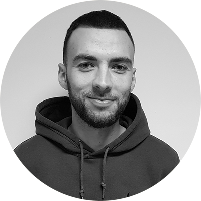

|  |
Adrien RazéÉtudiant en master marketing opérationnel international. Étudiant à l'Université Paris X. Fan de sport depuis toujours et particulièrement de football. Membre de l'Association de la Jeunesse Brucoise. |
| Dates | Emploi |
|---|---|
| 2016 - 2021 | Membre de l'Association de la jeunesse brucoise |
| 2018 - 2019 | Serveur chez Angler Restaurant |
| 2018 | Stagiaire responsable commercial chez Espace Foot |
| 2017 | Stagiaire commercial chez Planet Sports |
| 2016 | Stagiaire vendeur chez Sport 2000 |
|
|
|